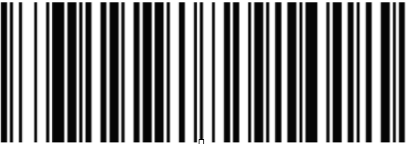

<!--
	<script>
$(document).ready(function(){

    $("#barcode-desc").click(function(){
        $("#scanner-code").closest($("#barcode-desc")).slideToggle("fast");
    });
});
</script>
-->

<div style="background-color: " id="toggle-container">

<h3 id="barcode-desc">Reset scanner to factory setting</h3>
<div id="scanner-code"><p>reset</p>
<!--  -->
</div> 

<h3 id="barcode-desc">Auto return</h3>
<div id="answer"><p>The Enter function will automatically be submitted each time a barcode is scanned</p> 

</div> 
 
</div>